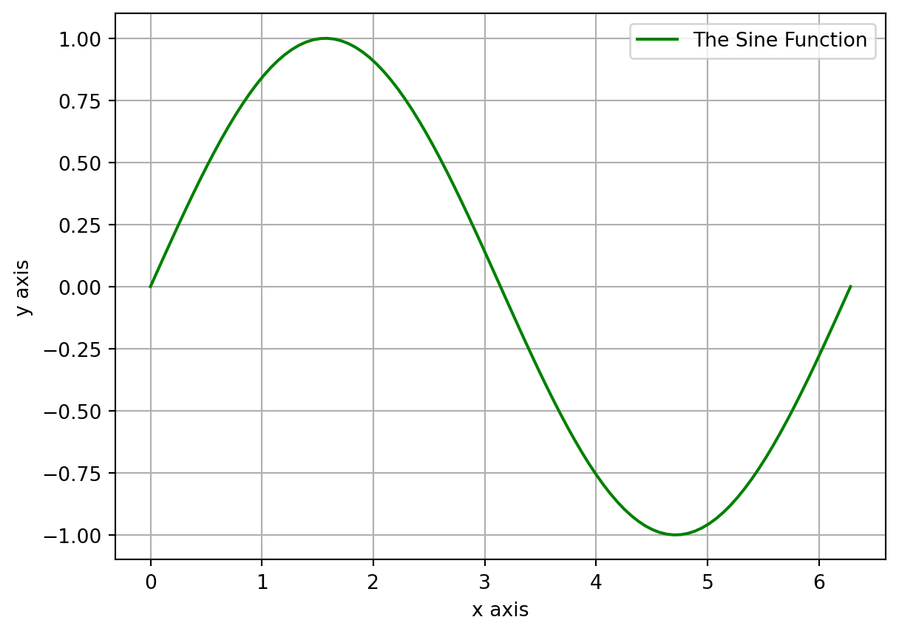
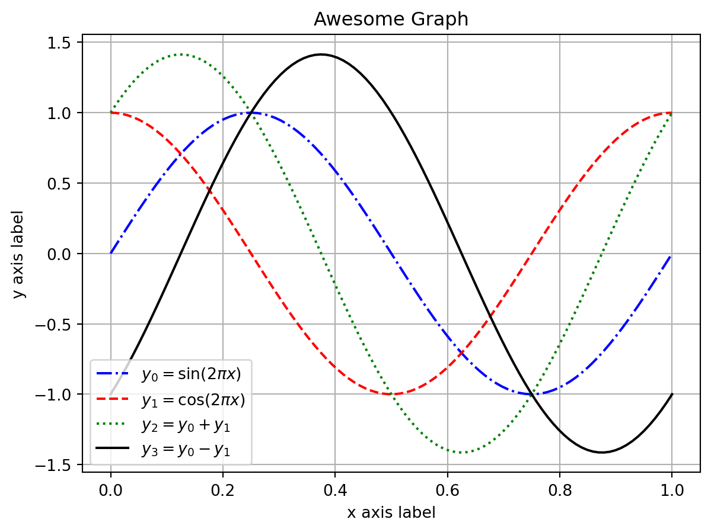
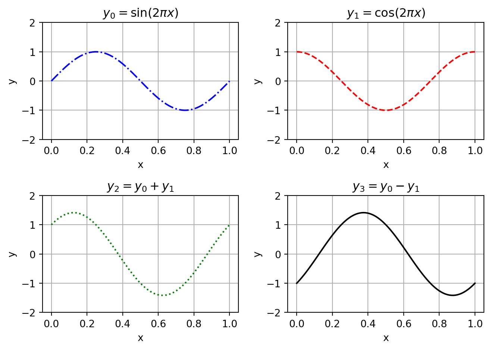
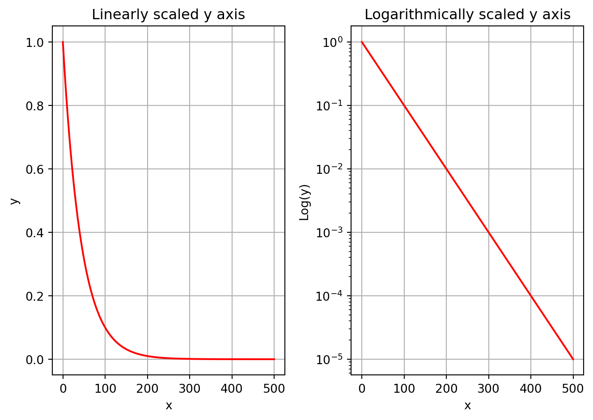

import numpy as np
import matplotlib.pyplot as plt1 Essential Python
Simple is better than complex.
–Guido van Rossum
In this chapter we will walk through some of the basics of using Python - the powerful general-purpose programming language that we will use throughout this module. I am assuming throughout this chapter that you have already had encounters with some programming language. This may have been R, Julia, Java, C, MATLAB, Maple, Mathematica, if it was not already Python. Hence, I am assuming that you know the basics about what a programming language “is” and “does.” There are a lot of similarities between several of these languages, and in fact they borrow heavily from each other in syntax, ideas, and implementation.
If you are new to Python, don’t feel that you need to work through this chapter in one go. Instead, spread the work over the first two weeks of the course and intermingle it with your work on the next two chapters. There is a lot of material in this chapter. Do not feel that you need to learn it all by hard. The idea is just that you should have seen the various language constructs once. Your familiarity with them will come automatically later when you use them throughout the course.
1.1 Why Python?
We are going to be using Python since
Python is free,
Python is very widely used,
Python is flexible,
Python is relatively easy to learn,
and Python is quite powerful.
It is important to keep in mind that Python is a general purpose language that we will be using for Scientific Computing. The purpose of Scientific Computing is not to build apps, build software, manage databases, or develop user interfaces. Instead, Scientific Computing is the use of a computer programming language (like Python) along with mathematics to solve scientific and mathematical problems. For this reason it is definitely not our purpose to write an all-encompassing guide for how to use Python. We will only cover what is necessary for our computing needs. You will learn more as the course progresses so use this chapter just to get going with the language.
We are also definitely not saying that Python is the best language for scientific computing under all circumstances. The reason there are so many scientific programming languages coexisting is that each has particular strengths that make it the best option for particular applications. But we are saying that Python is so widely used that every scientist should know Python.
There is an overwhelming abundance of information available about Python and the suite of tools that we will frequently use.
Python https://www.python.org/,
numpy(numerical Python) https://www.numpy.org/,matplotlib(a suite of plotting tools) https://matplotlib.org/,scipy(scientific Python) https://www.scipy.org/.
These tools together provide all of the computational power that we will need. And they are free!
1.2 Google Colab
Every computer is its own unique flower with its own unique requirements. Hence, we will not spend time here giving you all of the ways that you can install Python and all of the associated packages necessary for this module. Unless you are already familiar with using Python on your own computer, I highly recommend that you use the Google Colab notebook tool for writing your Python code: https://colab.research.google.com.
Google Colab allows you to keep all of your Python code on your Google Drive. The Colab environment is a free and collaborative version of the popular Jupyter notebook project. Jupyter notebooks allow you to write and test code as well as to mix writing (including LaTeX formatting) in along with your code and your output. I recommend that if you are new to Google Colab, you start by watching the brief introductory video.
Exercise 1.1 Spend a bit of time poking around in Colab. Figure out how to
Create new Colab notebooks.
Add and delete code cells.
Use the keyboard to switch between writing text and writing code.
Save a notebook to your Google Drive.
Download a notebook to your computer.
Exercise 1.2 Create a new Colab notebook and in that notebook create a text cell. In that text cell create the following displayed equation using LaTeX: \[\begin{equation} e^{i\pi}=-1 \end{equation}\]
Exercise 1.3 Share a Colab notebook with all the members of your group and see whether you can collaboratively edit it. The goal is that that everyone adds a cell that contains their own name and a favourite equation. Then share that notebook with your lecturer gustav.delius@york.ac.uk.
If you are already very practised in using Python then you can jump straight to Section 1.8 with the coding exercises. But if you are new to Python or your Python skills are a bit rusty, then you will benefit from working through all the examples and exercises below, making sure you copy and paste all the code into your Colab notebook and run it there.
1.3 Hello, World!
As is traditional when learning a new programming language, we should create code that prints the words “Hello, world!”. The code below does just that.
print("Hello, world!")In a Jupyter notebook you will write your code in a code block, and when you are ready to run it you can press Shift+Enter (or Control+Enter) and you will see your output. Shift+Enter will evaluate your code and advance to the next block of code. Control+Enter will evaluate without advancing the cursor to the next block.
Exercise 1.4 Create a new Jupyter notebook for your work and have Python print Hello, world! in your notebook.
Exercise 1.5 Write code to print your name in your Jupyter notebook.
1.4 Python Programming Basics
Throughout the remainder of this chapter it is expected that you run all of the blocks of code on your own and critically evaluate and understand the output. To copy the code from this guide to your notebook you can use the “Copy to Clipboard” icon that pops up in the top right corner of a code block in this guide when you hover over that code block.
1.4.1 Variables
Variable names in Python can contain letters (lower case or capital), numbers 0-9, and some special characters such as the underscore. Variable names must start with a letter. There are a bunch of reserved words that you can not use for your variable names because they have a special meaning in the Python syntax. Python will let you know with a syntax error if you try to use a reserved word for a variable name.
You can do the typical things with variables. Assignment is with an equal sign (be careful R users, we will not be using the left-pointing arrow here!).
Warning: When defining numerical variables you do not always get floating point numbers. In some programming languages, if you write x=1 then automatically x is saved as 1.0; a floating point number, not an integer. In Python however, if you assign x=1 it is defined as an integer (with no decimal digits) but if you assign x=1.0 it is assigned as a floating point number.
# assign some variables
x = 7 # integer assignment of the integer 7
y = 7.0 # floating point assignment of the decimal number 7.0
print("The variable x has the value", x, " and has type", type(x), ". \n")
print("The variable y has the value", y, " and has type", type(y), ". \n")Remember to copy each code block to your own notebook, execute it and look at the output.
# multiplying by a float will convert an integer to a float
x = 7 # integer assignment of the integer 7
print("Multiplying x by 1.0 gives", 1.0*x)
print("The type of this value is", type(1.0*x), ". \n")The allowed mathematical operations are:
Addition:
+Subtraction:
-Multiplication:
*Division:
/Integer Division (modular division):
//and%Exponents:
**
That’s right, the caret key, ^, is NOT an exponent in Python (sigh). Instead we have to get used to ** for exponents.
x = 7.0
y = x**2 # square the value in x
print(y)Exercise 1.6 What happens if you evaluate 7^2 in Python? What does it give you? We will return to this later.
Exercise 1.7 Write code to define positive integers \(a,b\) and \(c\) of your own choosing. Then calculate \(a^2, b^2\) and \(c^2\). When you have all three values computed, check to see if your three values form a Pythagorean Triple so that \(a^2 + b^2 = c^2\). Have Python simply say True or False to verify that you do, or do not, have a Pythagorean Triple defined. Hint: You will need to use the == Boolean check just like in other programming languages.
1.4.2 Indexing and Lists
Lists are a key component to storing data in Python. Lists are exactly what the name says: lists of things (in our case, usually the entries are floating point numbers).
Warning: Python indexing starts at 0 whereas some other programming languages have indexing starting at 1. In other words, the first entry of a list has index 0, the second entry as index 1, and so on. We just have to keep this in mind.
We can extract a part of a list using the syntax name[start:stop] which extracts elements between index start and stop-1. Take note that Python stops reading at the second to last index. This often catches people off guard when they first start with Python.
Example 1.1 (Lists and Indexing) Let us look at a few examples of indexing from lists. In this example we will use the list of numbers 0 through 8. This list contains 9 numbers indexed from 0 to 8.
- Create the list of numbers 0 through 8
MyList = [0,1,2,3,4,5,6,7,8]- Print only the element with index 0.
print(MyList[0]) - Print all elements up to, but not including, the third element of
MyList.
print(MyList[:2])- Print the last element of
MyList(this is a handy trick!).
print(MyList[-1]) - Print the elements indexed 1 through 4. Beware! This is not the first through fifth element.
print(MyList[1:5]) - Print every other element in the list starting with the first.
print(MyList[0::2])- Print the last three elements of
MyList
print(MyList[-3:])In Python, elements in a list do not need to be the same type. You can mix integers, floats, strings, lists, etc.
Example 1.2 In this example we see a list of several items that have different data types: float, integer, string, and complex. Note that the imaginary number \(i\) is represented by \(1j\) in Python. This is common in many scientific disciplines and is just another thing that we will need to get used to in Python. (For example, \(j\) is commonly used as the symbol for the imaginary unit \(\sqrt{-1}\) ) in electrical engineering since \(i\) is the symbol commonly used for electric current, and using \(i\) for both would be problematic).
MixedList = [1.0, 7, 'Bob', 1-1j]
print(MixedList)
print(type(MixedList[0]))
print(type(MixedList[1]))
print(type(MixedList[2]))
print(type(MixedList[3]))
# Notice that we use 1j for the imaginary number "i".Exercise 1.8 In this exercise you will put your new list skills into practice.
Create the list of the first several Fibonacci numbers: \[\begin{equation} 1, 1, 2, 3, 5, 8, 13, 21, 34, 55, 89. \end{equation}\]
Print the first four elements of the list.
Print every third element of the list starting from the first.
Print the last element of the list.
Print the list in reverse order.
Print the list starting at the last element and counting backward by every other element.
1.4.3 List Operations
Python is awesome about allowing you to do things like appending items to lists, removing items from lists, and inserting items into lists. Note in all of the examples below that we are using the code
variable.method
where you put the variable name, a dot, and the thing that you would like to do to that variable. For example, MyList.append(7) will append the number 7 to the list MyList. We say that append is a “method” of the list MyList. This is a common programming feature in Python and we will use it often.
Example 1.3 The .append method can be used to append an element to the end of a list.
MyList = [0,1,2,3]
print(MyList)
# Append the string 'a' to the end of the list
MyList.append('a')
print(MyList)
# Do it again ... just for fun
MyList.append('a')
print(MyList)
# Append the number 15 to the end of the list
MyList.append(15)
print(MyList)Example 1.4 The .remove method can be used to remove an element from a list.
# Let us remove the 3
MyList.remove(3)
print(MyList)Example 1.5 The .insert method can be used to insert an element at a location in a list.
# insert the letter `A` at the 0-indexed spot
MyList.insert(0,'A')
# insert the letter `B` at the spot with index 3
MyList.insert(3,'B')
# remember that index 3 means the fourth spot in the list
print(MyList)Exercise 1.9 In this exercise you will go a bit further with your list operation skills.
Create the list of the first several Lucas Numbers: \(1,3,4,7,11,18,29,47.\)
Add the next three Lucas Numbers to the end of the list.
Remove the number 3 from the list.
Insert the 3 back into the list in the correct spot.
Print the list in reverse order.
Do a few other list operations to this list and report your findings.
1.4.4 Tuples
In Python, a “tuple” is like an ordered pair (or ordered triple, or ordered quadruple, ...) in mathematics. We will occasionally see tuples in our work in numerical analysis so for now let us just give a couple of code snippets showing how to store and read them.
We can define the tuple of numbers \((10,20)\) in Python as follows:
Example 1.6
point = 10, 20
print(point, type(point))We can also define a tuple with parenthesis if we like. Python does not care.
point = (10, 20) # now we define the tuple with parenthesis
print(point, type(point))We can then unpack the tuple into components if we wish:
x, y = point
print("x = ", x)
print("y = ", y)There are other important data structures in Python that we will not cover in this module. These include dictionaries and sets. We will not cover these because they are not necessary for our work in numerical analysis. We are trying to keep things simple. If you are interested in learning more about these data structures, you can find a lot of information about them in the Python documentation.
1.4.5 Control Flow: Loops and If Statements
Any time you need to do some repetitive task with a programming language you can use a loop. Just like in other programming languages, we can do loops and conditional statements in very easy ways in Python. The thing to keep in mind is that the Python language is very white-space-dependent. This means that your indentations need to be correct in order for a loop to work. You could get away with sloppy indention in other languages but not so in Python. Also, in some languages (like R and Java) you need to wrap your loops in curly braces. Again, not so in Python.
Caution: Be really careful of the white space in your code when you write loops.
1.4.5.1 for Loops
A for loop is designed to do a task a certain number of times and then stop. This is a great tool for automating repetitive tasks, but it also nice numerically for building sequences, summing series, or just checking lots of examples. The following are several examples of Python for loops. Take careful note of the syntax for a for loop as it is the same as for other loops and conditional statements:
a control statement,
a colon, a new line,
indent four spaces,
some programming statements
When you are done with the loop, just back out of the indention. There is no need for an end command or a curly brace. All of the control statements in Python are white-space-dependent.
Example 1.7 Print the first 6 perfect squares.
for x in [1,2,3,4,5,6]:
print(x**2)Often instead of writing the list of integers explicitly one uses the range() function, so that this example would be written as
for x in range(1,7):
print(x**2)Note that range(1,7) produces the integers from 1 to 6, not from 1 to 7. This is another manifestation of Python’s weird 0-based indexing. Of course it is only weird to people who are new to Python. For Pythonists it is perfectly natural.
Example 1.8 Print the names in a list.
NamesList = ['Alice','Billy','Charlie','Dom','Enrique','Francisco']
for name in NamesList:
print(name)In Python you can use a more compact notation for for loops sometimes. This takes a bit of getting used to, but is super slick!
Example 1.9 Create a list of the perfect squares from 1 to 9.
# create a list of the perfect squares from 1 to 9
CoolList = [x**2 for x in range(1,10)]
print(CoolList)
# Then print the sum of this list
print("The sum of the first 9 perfect squares is",sum(CoolList))for loops can also be used to build recursive sequences as can be seen in the next couple of examples.
Example 1.10 In the following code we write a for loop that outputs a list of the first 7 iterations of the sequence \(x_{n+1}=-0.5x_n+1\) starting with \(x_0=3\). Notice that we are using the command x.append instead of \(x[n+1]\) to append the new term to the list. This allows us to grow the length of the list dynamically as the loop progresses.
x=[3.0]
for n in range(0,7):
x.append(-0.5*x[n] + 1)
print(x) # print the whole list x at each step of the loopExample 1.11 As an alternative to the code from the previous example we can pre-allocate the memory in an array of zeros. This is done with the clever code x = [0] * 10. Literally multiplying a list by some number, like 10, says to repeat that list 10 times.
Now we will build the sequence with pre-allocated memory.
x = [0] * 7
x[0] = 3.0
for n in range(0,6):
x[n+1] = -0.5*x[n]+1
print(x) # This print statement shows x at each iterationExercise 1.10 We want to sum the first 100 perfect cubes. Let us do this in two ways.
Start off a variable called Total at 0 and write a
forloop that adds the next perfect cube to the running total.Write a
forloop that builds the sequence of the first 100 perfect cubes. After the list has been built find the sum with thesum()function.
The answer is: 25,502,500 so check your work.
Exercise 1.11 Write a for loop that builds the first 20 terms of the sequence \(x_{n+1}=1-x_n^2\) with \(x_0=0.1\). Pre-allocate enough memory in your list and then fill it with the terms of the sequence. Only print the list after all of the computations have been completed.
1.4.5.2 while Loops
A while loop repeats some task (or sequence of tasks) while a logical condition is true. It stops when the logical condition turns from true to false. The structure in Python is the same as with for loops.
Example 1.12 Print the numbers 0 through 4 and then the word “done.” we will do this by starting a counter variable, i, at 0 and increment it every time we pass through the loop.
i = 0
while i < 5:
print(i)
i += 1 # increment the counter
print("done")Example 1.13 Now let us use a while loop to build the sequence of Fibonacci numbers and stop when the newest number in the sequence is greater than 1000. Notice that we want to keep looping until the condition that the last term is greater than 1000 – this is the perfect task for a while loop, instead of a for loop, since we do not know how many steps it will take before we start the task
Fib = [1,1]
while Fib[-1] <= 1000:
Fib.append(Fib[-1] + Fib[-2])
print("The last few terms in the list are:\n",Fib[-3:])Exercise 1.12 Write a while loop that sums the terms in the Fibonacci sequence until the sum is larger than 1000
1.4.5.3 if Statements
Conditional (if) statements allow you to run a piece of code only under certain conditions. This is handy when you have different tasks to perform under different conditions.
Example 1.14 Let us look at a simple example of an if statement in Python.
Name = "Alice"
if Name == "Alice":
print("Hello, Alice. Isn't it a lovely day to learn Python?")
else:
print("You're not Alice. Where is Alice?")Name = "Billy"
if Name == "Alice":
print("Hello, Alice. Isn't it a lovely day to learn Python?")
else:
print("You're not Alice. Where is Alice?")Example 1.15 For another example, if we get a random number between 0 and 1 we could have Python print a different message depending on whether it was above or below 0.5. Run the code below several times and you will see different results each time.
Note: We have to import the numpy package to get the random number generator in Python. Do not worry about that for now. we will talk about packages in a moment.
import numpy as np
x = np.random.rand(1,1) # get a random 1x1 matrix using numpy
x = x[0,0] # pull the entry from the first row and first column
if x < 0.5:
print(x," is less than a half")
else:
print(x, "is NOT less than a half")(Take note that the output will change every time you run it)
Example 1.16 In many programming tasks it is handy to have several different choices between tasks instead of just two choices as in the previous examples. This is a job for the elif command.
This is the same code as last time except we will make the decision at 0.33 and 0.67
import numpy as np
x = np.random.rand(1,1) # get a random 1x1 matrix using numpy
x = x[0,0] # pull the entry from the first row and first column
if x < 0.33:
print(x," < 1/3")
elif x < 0.67:
print("1/3 <= ",x,"< 2/3")
else:
print(x, ">= 2/3")(Take note that the output will change every time you run it)
Exercise 1.13 Write code to give the Collatz Sequence \[\begin{equation} x_{n+1} = \left\{ \begin{array}{ll} x_n / 2, & \text{$x_n$ is even} \\ 3 x_n + 1, & \text{otherwise} \end{array} \right. \end{equation}\] starting with a positive integer of your choosing. The sequence will converge1 to 1 so your code should stop when the sequence reaches 1.
Hints: To test whether a number x is even you can test whether the remainder after dividing by 2 is zero with (x % 2) == 0. Also you will want to use the integer division // when calculating \(x_n/2\).
1.4.6 Functions
Mathematicians and programmers talk about functions in very similar ways, but they are not exactly the same. When we say “function” in a programming sense we are talking about a chunk of code that you can pass parameters and expect an output of some sort. This is not unlike the mathematician’s version, but unlike a mathematical function can also have side effects, like plotting a graph for example. So Python’s definition of a function is a bit more flexible than that of a mathematician.
In Python, to define a function we start with def, followed by the function’s name, any input variables in parenthesis, and a colon. The indented code after the colon is what defines the actions of the function.
Example 1.17 The following code defines the polynomial \(f(x) = x^3 + 3x^2 + 3x + 1\) and then evaluates the function at a point \(x=2.3\).
def f(x):
return(x**3 + 3*x**2 + 3*x + 1)
f(2.3)Take careful note of several things in the previous example:
To define the function we cannot just type it like we would see it one paper. This is not how Python recognizes functions.
Once we have the function defined we can call upon it just like we would on paper.
We cannot pass symbols into this type of function.2
Exercise 1.14 Define the function \(g(n) = n^2 + n + 41\) as a Python function. Write a loop that gives the output for this function for integers from \(n=0\) to \(n=39\). Euler noticed that each of these outputs is a prime number (check this on your own). Will the function produce a prime for \(n=40\)? For \(n=41\)?
Example 1.18 One cool thing that you can do with functions is call them recursively. That is, you can call the same function from within the function itself. This turns out to be really handy in several mathematical situations.
Let us define a function for the factorial. This function is naturally going to be recursive in the sense that it calls on itself!
def Fact(n):
if n==0:
return(1)
else:
return( n*Fact(n-1) )
# Note: we are calling the function recursively.When you run this code there will be no output. You have just defined the function so you can use it later. So let us use it to make a list of the first several factorials. Note the use of a for loop in the following code.
FactList = [Fact(n) for n in range(0,10)]
FactListExample 1.19 For this next example let us define the sequence \[\begin{equation} x_{n+1} = \left\{ \begin{array}{ll} 2x_n, & x_n \in [0,0.5] \\ 2x_n - 1, & x_n \in (0.5,1] \end{array} \right. \end{equation}\] as a function and then build a loop to find the first several iterates of the sequence starting at any real number between 0 and 1.
# Define the function
def MySeq(xn):
if xn <= 0.5:
return(2*xn)
else:
return(2*xn-1)
# Now build a sequence with this function
x = [0.125] # arbitrary starting point
for n in range(0,5): # Let us only build the first 5 terms
x.append(MySeq(x[-1]))
print(x)Example 1.20 A fun way to approximate the square root of two is to start with any positive real number and iterate over the sequence \[\begin{equation} x_{n+1} = \frac{1}{2} x_n + \frac{1}{x_n} \end{equation}\] until we are within any tolerance we like of the square root of \(2\). Write code that defines the sequence as a function and then iterates in a while loop until we are within \(10^{-8}\) of the square root of 2.
We import the math package so that we get the square root function. More about packages in the next section.
from math import sqrt
def f(x):
return(0.5*x + 1/x)
x = 1.1 # arbitrary starting point
print("approximation \t\t exact \t\t abs error")
while abs(x-sqrt(2)) > 10**(-8):
x = f(x)
print(x, sqrt(2), abs(x - sqrt(2)))Exercise 1.15 The previous example is a special case of the Babylonian Algorithm for calculating square roots. If you want the square root of \(S\) then iterate the sequence \[\begin{equation} x_{n+1} = \frac{1}{2} \left( x_n + \frac{S}{x_n} \right) \end{equation}\] until you are within an appropriate tolerance.
Modify the code given in the previous example to give a list of approximations of the square roots of the natural numbers 2 through 20, each to within \(10^{-8}\). This problem will require that you build a function, write a ‘for’ loop (for the integers 2-20), and write a ‘while’ loop inside your ‘for’ loop to do the iterations.
1.4.7 Lambda Functions
Using def to define a function as in the previous subsection is really nice when you have a function that is complicated or requires some bit of code to evaluate. However, in the case of mathematical functions we have a convenient alternative: lambda Functions.
The basic idea of a lambda Function is that we just want to state what the variable is and what the rule is for evaluating the function. This is closest to the way that we write mathematical functions. For example, we can define the mathematical function \(f(x) = x^2+3\) in two different ways.
- Using
def:
def f(x):
return(x**2+3)- Using
lambda:
f = lambda x: x**2+3You can see that in the Lambda Function we are explicitly stating the name of the variable immediately after the word lambda, then we put a colon, and then the function definition.
No matter whether we use def or lambda to define the function f, if we want to evaluate the function at a point, say \(x=1.5\), then we can write code just like we would mathematically: \(f(1.5)\)
f(1.5) # evaluate the function at x=1.5We can also define Lambda Functions of several variables. For example, if we want to define the mathematical function \(f(x,y) = x^2 + xy + y^3\) we could write the code
f = lambda x, y: x**2 + x*y + y**3If we wanted the value \(f(2,4)\) we would now write the code f(2,4).
Exercise 1.16 Go back to Exercise 1.14 and repeat this exercise using a lambda function.
Exercise 1.17 Go back to Exercise 1.15 and repeat this exercise using a lambda function.
1.4.8 Packages
Python was not created as a scientific programming language. The reason Python can be used for scientific computing is that there are powerful extension packages that define additional functions that are needed for scientific calculations.
You need to remember which functions live in which packages so that you can load the right ones. It is helpful to keep a list of commonly used packages and functions at least while you are getting started.
Let us start with the math package.
Example 1.21 The code below imports the math package into your instance of Python and calculates the cosine of \(\pi/4\).
import math
x = math.cos(math.pi / 4)
print(x)The answer, unsurprisingly, is the decimal form of \(\sqrt{2}/2\).
You might already see a potential disadvantage to Python’s packages: there is now more typing involved! Let us fix this. When you import a package you could just import all of the functions so they can be used by their proper names.
Example 1.22 Here we import the entire math package so we can use every one of the functions therein without having to use the math prefix.
from math import * # read this as: from math import everything
x = cos(pi / 4)
print(x)The end result is exactly the same: the decimal form of \(\sqrt{2}/2\), but now we had less typing to do.
Now you can freely use the functions that were imported from the math package. There is a disadvantage to this, however. What if we have two packages that import functions with the same name. For example, in the math package and in the numpy package there is a cos() function. In the next block of code we will import both math and numpy, but instead we will import them with shortened names so we can type things a bit faster.
Example 1.23 Here we import math and numpy under aliases so we can use the shortened aliases and not mix up which functions belong to which packages.
import math as ma
import numpy as np
# use the math version of the cosine function
x = ma.cos( ma.pi / 4)
# use the numpy version of the cosine function
y = np.cos( np.pi / 4)
print(x, y)Both x and y in the code give the decimal approximation of \(\sqrt{2}/2\). This is clearly pretty redundant in this really simple case, but you should be able to see where you might want to use this and where you might run into troubles.
Example 1.24 (Contents of a package) Once you have a package imported you can see what is inside of it using the dir command. The following block of code prints a list of all of the functions inside the math package.
import math
print(dir(math))By the way: you only need to import a package once in a session. The only reason we are repeating the import statement in each code block is to make it easier to come back to this material later in a new session, where you will need to import the packages again.
Of course, there will be times when you need help with a function. You can use the help function to view the help documentation for any function. For example, you can run the code help(math.acos) to get help on the arc cosine function from the math package.
Exercise 1.18 Import the math package, figure out how the log function works, and write code to calculate the logarithm of the number 8.3 in base 10, base 2, base 16, and base \(e\) (the natural logarithm).
1.5 Numerical Python with NumPy
The base implementation of Python includes the basic programming language, the tools to write loops, check conditions, build and manipulate lists, and all of the other things that we saw in the previous section. In this section we will explore the package numpy that contains optimized numerical routines for doing numerical computations in scientific computing.
Example 1.25 To start with let us look at a really simple example. Say you have a list of real numbers and you want to take the sine of every element in the list. If you just try to take the sine of the list you will get an error. Try it yourself.
from math import pi, sin
MyList = [0,pi/6, pi/4, pi/3, pi/2, 2*pi/3, 3*pi/4, 5*pi/6, pi]
sin(MyList)You could get around this error using some of the tools from base Python, but none of them are very elegant from a programming perspective.
from math import pi, sin
MyList = [0,pi/6, pi/4, pi/3, pi/2, 2*pi/3, 3*pi/4, 5*pi/6, pi]
SineList = [sin(n) for n in MyList]
print(SineList)from math import pi, sin
MyList = [0,pi/6, pi/4, pi/3, pi/2, 2*pi/3, 3*pi/4, 5*pi/6, pi]
SineList = [ ]
for n in range(0,len(MyList)):
SineList.append( sin(MyList[n]) )
print(SineList)Perhaps more simply, say we wanted to square every number in a list. Just appending the code **2 to the end of the list will fail!
MyList = [1,2,3,4]
MyList**2 # This will produce an errorIf, instead, we define the list as a numpy array instead of a Python list then everything will work mathematically exactly the way that we intend.
import numpy as np
MyList = np.array([1,2,3,4])
MyList**2 # This will work as expected! Exercise 1.19 See if you can take the sine of a full list of numbers that are stored in a numpy array.
Hint: you will now see why the numpy package provides its own version of the sine function.
The package numpy is used in many (most) mathematical computations in numerical analysis using Python. It provides algorithms for matrix and vector arithmetic. Furthermore, it is optimized to be able to do these computations in the most efficient possible way (both in terms of memory and in terms of speed).
Typically when we import numpy we use import numpy as np. This is the standard way to name the numpy package. This means that we will have lots of function with the prefix “np” in order to call on the numpy functions. Let us first see what is inside the package with the code print(dir(np)) after importing numpy as np. A brief glimpse through the list reveals a huge wealth of mathematical functions that are optimized to work in the best possible way with the Python language. (We are intentionally not showing the output here since it is quite extensive, run it so you can see.)
1.5.1 Numpy Arrays, Array Operations, and Matrix Operations
In the previous section you worked with Python lists. As we pointed out, the shortcoming of Python lists is that they do not behave well when we want to apply mathematical functions to the vector as a whole. The “numpy array”, np.array, is essentially the same as a Python list with the notable exceptions that
In a
numpyarray every entry is a floating point numberIn a
numpyarray the memory usage is more efficient (mostly since Python is expecting data of all the same type)With a
numpyarray there are ready-made functions that can act directly on the array as a matrix or a vector
Let us just look at a few examples using numpy. What we are going to do is to define a matrix \(A\) and vectors \(v\) and \(w\) as \[\begin{equation}
A = \begin{pmatrix} 1 & 2 \\ 3 & 4 \end{pmatrix}, \quad v = \begin{pmatrix} 5\\6 \end{pmatrix} \quad \text{and} \quad w = v^T = \begin{pmatrix} 5 & 6 \end{pmatrix}.
\end{equation}\] Then we will do the following
Get the size and shape of these arrays
Get individual elements, rows, and columns from these arrays
Treat these arrays as with linear algebra to
do element-wise multiplication
do matrix a vector products
do scalar multiplication
take the transpose of matrices
take the inverse of matrices
Example 1.26 (numpy Matrices) The first thing to note is that a matrix is a list of lists (each row is a list).
import numpy as np
A = np.array([[1,2],[3,4]])
print("The matrix A is:\n",A)
v = np.array([[5],[6]]) # this creates a column vector
print("The vector v is:\n",v)
w = np.array([[5,6]]) # this creates a row vector
print("The vector w is:\n",w)Example 1.27 (.shape) The .shape attribute can be used to give the shape of a numpy array. Notice that the output is a tuple showing the size (rows, columns).
print("The shape of the matrix A is ", A.shape)
print("The shape of the column vector v is ", v.shape)
print("The shape of the row vector w is ", w.shape)Example 1.28 (.size) The .size attribute can be used to give the size of a numpy array. The size of a matrix or vector will be the total number of elements in the array. You can think of this as the product of the values in the tuple coming from the shape method.
print("The size of the matrix A is ", A.size)
print("The size of the column vector v is ", v.size)
print("The size of the row vector w is ", w.size)Reading individual elements from a numpy array is the same, essentially, as reading elements from a Python list. We will use square brackets to get the row and column. Remember that the indexing all starts from 0, not 1!
Example 1.29 Let us read the top left and bottom right entries of the matrix \(A\).
import numpy as np
A = np.array([[1,2],[3,4]])
print(A[0,0]) # top left
print(A[1,1]) # bottom rightExample 1.30 Let us read the first row from that matrix \(A\).
import numpy as np
A = np.array([[1,2],[3,4]])
print(A[0,:])Example 1.31 Let us read the second column from the matrix \(A\).
import numpy as np
A = np.array([[1,2],[3,4]])
print(A[:,1])Notice when we read the column it was displayed as a row. Be careful. Reading a row or a column from a matrix will automatically flatten it into a 1-dimensional array.
If we try to multiply either \(A\) and \(v\) or \(A\) and \(A\) we will get some funky results. Unlike in some programming languages like MATLAB, the default notion of multiplication is NOT matrix multiplication. Instead, the default is element-wise multiplication. You may be familiar with this from R.
Example 1.32 If we write the code A*A we do NOT do matrix multiplication. Instead we do element-by-element multiplication. This is a common source of issues when dealing with matrices and Linear Algebra in Python.
import numpy as np
A = np.array([[1,2],[3,4]])
print("Element-wise multiplication:\n", A * A)
print("Matrix multiplication:\n", A @ A)Example 1.33 If we write A * v Python will do element-wise multiplication across each column since \(v\) is a column vector. If we want the matrix A to act on v we write A @ v.
import numpy as np
A = np.array([[1,2],[3,4]])
v = np.array([[5],[6]])
print("Element-wise multiplication on each column:\n", A * v)
# A @ v will do proper matrix multiplication
print("Matrix A acting on vector v:\n", A @ v)It is up to you to check that these products are indeed correct from the definitions of matrix multiplication from Linear Algebra.
It remains to show some of the other basic linear algebra operations: inverses, determinants, the trace, and the transpose.
Example 1.34 (Transpose) Taking the transpose of a matrix (swapping the rows and columns) is done with the .T attribute.
print(A.T) # The transpose is relatively simpleExample 1.35 (Trace) The trace is done with matrix.trace()
print(A.trace()) # The trace is pretty darn easy tooOddly enough, the trace returns a matrix, not a scalar Therefore you will have to read the first entry (index [0,0]) from the answer to just get the trace.
Example 1.36 (Determinant) The determinant function is hiding under the linalg subpackage inside numpy. Therefore we need to call it as such.
print(np.linalg.det(A)) You notice an interesting numerical error here. You can do the determinant easily by hand and so know that it should be exactly \(-2\).
Example 1.37 (Inverse) In the linalg subpackage there is also a function for taking the inverse of a matrix.
Ainv = np.linalg.inv(A)
print(Ainv)
print(A @ Ainv) # check that we get the identity matrix backExercise 1.20 Now that we can do some basic linear algebra with numpy it is your turn. Define the matrix \(B\) and the vector \(u\) as
\[\begin{equation} B = \begin{pmatrix} 1 & 4 & 8 \\ 2 & 3 & -1 \\ 0 & 9 & -3 \end{pmatrix} \quad \text{and} \quad u = \begin{pmatrix} 6 \\ 3 \\ -7 \end{pmatrix}. \end{equation}\]
Then find
\(Bu\)
\(B^2\) (in the traditional linear algebra sense)
The size and shape of \(B\)
\(B^T u\)
The element-by-element product of \(B\) with itself
The dot product of \(u\) with the first row of \(B\)
1.5.2 arange, linspace, zeros, ones, and meshgrid
There are a few built-in ways to build arrays in numpy that save a bit of time in many scientific computing settings.
Example 1.38 The np.arange (array range) function is great for building sequences.
import numpy as np
x = np.arange(0,0.6,0.1)
print(x)np.arange builds an array of floating point numbers with the arguments start, stop, and step. Note that the stop value itself is not included in the result.
Example 1.39 The np.linspace function builds an array of floating point numbers starting at one point, ending at the next point, and have exactly the number of points specified with equal spacing in between: start, stop, number of points.
import numpy as np
y = np.linspace(0,5,11)
print(y)In a linear space you are always guaranteed to hit the stop point exactly, but you do not have direct control over the step size.
Example 1.40 The np.zeros function builds an array of zeros. This is handy for pre-allocating memory.
import numpy as np
z = np.zeros((3,5)) # create a 3x5 matrix of zeros
print(z)Example 1.41 The np.ones function builds an array of ones.
import numpy as np
u = np.ones((3,5)) # create a 3x5 matrix of ones
print(u)Example 1.42 The np.meshgrid function builds two arrays that when paired make up the ordered pairs for a 2D (or higher D) mesh grid of points. This is handy for building 2D (or higher dimensional) arrays of data for multi-variable functions. Notice that the output is defined as a tuple.
import numpy as np
x, y = np.meshgrid( np.linspace(0,5,6) , np.linspace(0,5,6) )
print("x = ", x)
print("y = ", y)The thing to notice with the np.meshgrid() function is that when you lay the two arrays on top of each other, the matching entries give every ordered pair in the domain.
If the purpose of this is not clear to you yet, don’t worry. You will see it used a lot later in the module.
Exercise 1.21 Now it is time to practice with some of these numpy functions.
Create a
numpyarray of the numbers 1 through 10 and square every entry in the list without using a loop.Create a \(10 \times 10\) identity matrix and change the top right corner to a 5. Hint:
np.identity()Find the matrix-vector product of the answer to part (b) and the answer to part (a).
Change the bottom row of your matrix from part (b) to all \(3\)’s, then change the third column to all \(7\)’s, and then find the \(5^{th}\) power of this matrix.
1.6 Plotting with Matplotlib
A key part of scientific computing is plotting your results or your data. The tool in Python best-suited to this task is the package matplotlib. As with all of the other packages in Python, it is best to learn just the basics first and then to dig deeper later. One advantage to using matplotlib in Python is that it is modelled off of MATLAB’s plotting tools. People coming from a MATLAB background should feel pretty comfortable here, but there are some differences to be aware of.
1.6.1 Basics with plt.plot()
We are going to start right away with an example. In this example, however, we will walk through each of the code chunks one-by-one so that we understand how to set up a proper plot.
Below we will mention some tricks for getting the plots to render that only apply to Jupyter Notebooks. If you are using Google Colab then you may not need some of these little tricks.
Example 1.43 (Plotting with matplotlib) In the first example we want to simply plot the sine function on the domain \(x \in [0,2\pi]\), colour it green, put a grid on it, and give a meaningful legend and axis labels. To do so we first need to take care of a couple of housekeeping items.
Import
numpyso we can take advantage of some good numerical routines.Import
matplotlib’spyplotmodule. The standard way to pull it in is with the nicknameplt(just like withnumpywhen we import it asnp).
In Jupyter Notebooks the plots will not show up unless you tell the notebook to put them “inline.” Usually we will use the following command to get the plots to show up. You do not need to do this in Google Colab. The percent sign is called a magic command in Jupyter Notebooks. This is not a Python command, but it is a command for controlling the Jupyter IDE specifically.
%matplotlib inlineNow we will build a numpy array of \(x\) values (using the np.linspace function) and a numpy array of \(y\) values from the sine function.
# 100 equally spaced points from 0 to 2pi
x = np.linspace(0,2*np.pi, 100)
y = np.sin(x)Next, build the plot with
plt.plot(). The syntax is:plt.plot(x, y, ’color’, ...)where you have several options that you can pass (more on that later).We send the plot label directly to the plot function. This is optional and we could set the legend up separately if we like.
Then we will add the grid with
plt.grid()Then we will add the legend to the plot
Finally we will add the axis labels
We end the plotting code with
plt.show()to tell Python to finally show the plot. This line of code tells Python that you are done building that plot.
plt.plot(x,y, 'green', label='The Sine Function')
plt.grid()
plt.legend()
plt.xlabel("x axis")
plt.ylabel("y axis")
plt.show()

Example 1.44 Now let us do a second example, but this time we want to show four different plots on top of each other. When you start a figure, matplotlib is expecting all of those plots to be layered on top of each other. (Note:For MATLAB users, this means that you do not need the hold on command since it is automatically “on.”)
In this example we will plot \[\begin{equation} y_0 = \sin(2\pi x) \quad y_1 = \cos(2 \pi x) \quad y_2 = y_0 + y_1 \quad \text{and} \quad y_3 = y_0 - y_1 \end{equation}\] on the domain \(x \in [0,1]\) with 100 equally spaced points. we will give each of the plots a different line style, built a legend, put a grid on the plot, and give axis labels.
import numpy as np
import matplotlib.pyplot as plt
# %matplotlib inline # you may need this in Jupyter Notebooks
# build the x and y values
x = np.linspace(0,1,100)
y0 = np.sin(2*np.pi*x)
y1 = np.cos(2*np.pi*x)
y2 = y0 + y1
y3 = y0 - y1
# plot each of the functions
# (notice that they will be on the same axes)
plt.plot(x, y0, 'b-.', label=r"$y_0 = \sin(2\pi x)$")
plt.plot(x, y1, 'r--', label=r"$y_1 = \cos(2\pi x)$")
plt.plot(x, y2, 'g:', label=r"$y_2 = y_0 + y_1$")
plt.plot(x, y3, 'k-', label=r"$y_3 = y_0 - y_1$")
# put in a grid, legend, title, and axis labels
plt.grid()
plt.legend()
plt.title("Awesome Graph")
plt.xlabel('x axis label')
plt.ylabel('y axis label')
plt.show()

Notice the r in front of the strings defining the legend. This prevents the backslash that is used a lot in LaTeX to be interpreted as an escape character. These strings are referred to as raw strings.
The legend was placed automatically at the lower left of the plot. There are ways to control the placement of the legend if you wish, but for now just let Python and matplotlib have control over the placement.
Example 1.45 Now let us create the same plot with slightly different code. The plot function can take several \((x, y)\) pairs in the same line of code. This can really shrink the amount of coding that you have to do when plotting several functions on top of each other.
# The next line of code does all of the plotting of all
# of the functions. Notice the order: x, y, color and
# line style, repeat
import numpy as np
import matplotlib.pyplot as plt
x = np.linspace(0,1,100)
y0 = np.sin(2*np.pi*x)
y1 = np.cos(2*np.pi*x)
y2 = y0 + y1
y3 = y0 - y1
plt.plot(x, y0, 'b-.', x, y1, 'r--', x, y2, 'g:', x, y3, 'k-')
plt.grid()
plt.legend([r"$y_0 = \sin(2\pi x)$",r"$y_1 = \cos(2\pi x)$",\
r"$y_2 = y_0 + y_1$",r"$y_3 = y_0 - y_1$"])
plt.title("Awesome Graph")
plt.xlabel('x axis label')
plt.ylabel('y axis label')
plt.show()
Exercise 1.22 Plot the functions \(f(x) = x^2\), \(g(x) = x^3\), and \(h(x) = x^4\) on the same axes. Use the domain \(x \in [0,1]\) and the range \(y \in [0,1]\). Put a grid, a legend, a title, and appropriate labels on the axes.
1.6.2 Subplots
It is often very handy to place plots side-by-side or as some array of plots. The subplots command allows us that control. The main idea is that we are setting up a matrix of blank plots and then populating the axes with the plots that we want.
Example 1.46 Let us repeat the previous exercise, but this time we will put each of the plots in its own subplot. There are a few extra coding quirks that come along with building subplots so we will highlight each block of code separately.
First we set up the plot area with
plt.subplots(). The first two inputs to thesubplotscommand are the number of rows and the number of columns in your plot array. For the first example we will do 2 rows of plots with 2 columns – so there are four plots total.Then we build each plot individually telling
matplotlibwhich axes to use for each of the things in the plots.Notice the small differences in how we set the titles and labels
In this example we are setting the \(y\)-axis to the interval \([-2,2]\) for consistency across all of the plots.
# set up the blank matrix of plots
import numpy as np
import matplotlib.pyplot as plt
x = np.linspace(0,1,100)
y0 = np.sin(2*np.pi*x)
y1 = np.cos(2*np.pi*x)
y2 = y0 + y1
y3 = y0 - y1
fig, axes = plt.subplots(nrows = 2, ncols = 2)
# Build the first plot
axes[0,0].plot(x, y0, 'b-.')
axes[0,0].grid()
axes[0,0].set_title(r"$y_0 = \sin(2\pi x)$")
axes[0,0].set_ylim(-2,2)
axes[0,0].set_xlabel("x")
axes[0,0].set_ylabel("y")
# Build the second plot
axes[0,1].plot(x, y1, 'r--')
axes[0,1].grid()
axes[0,1].set_title(r"$y_1 = \cos(2\pi x)$")
axes[0,1].set_ylim(-2,2)
axes[0,1].set_xlabel("x")
axes[0,1].set_ylabel("y")
# Build the first plot
axes[1,0].plot(x, y2, 'g:')
axes[1,0].grid()
axes[1,0].set_title(r"$y_2 = y_0 + y_1$")
axes[1,0].set_ylim(-2,2)
axes[1,0].set_xlabel("x")
axes[1,0].set_ylabel("y")
# Build the first plot
axes[1,1].plot(x, y3, 'k-')
axes[1,1].grid()
axes[1,1].set_title(r"$y_3 = y_0 - y_1$")
axes[1,1].set_ylim(-2,2)
axes[1,1].set_xlabel("x")
axes[1,1].set_ylabel("y")
fig.tight_layout()
plt.show()

The fig.tight_layout() command makes the plot labels a bit more readable in this instance (again, something you can play with).
Exercise 1.23 Put the functions \(f(x) = x^2\), \(g(x) = x^3\) and \(h(x) = x^4\) in a subplot environment with 1 row and 3 columns of plots. Use the unit interval as the domain and range for all three plot, but sure that each plot has a grid, appropriate labels, an appropriate title, and the overall figure has a title.
1.6.3 Logarithmic Scaling with semilogy, semilogx, and loglog
It is occasionally useful to scale an axis logarithmically. This arises most often when we are examining an exponential function, or some other function, that is close to zero for much of the domain. Scaling logarithmically allows us to see how small the function is getting in orders of magnitude instead of as a raw real number. we will use this often in numerical methods.
Example 1.47 In this example we will plot the function \(y = 10^{-0.01x}\) on a regular (linear) scale and on a logarithmic scale on the \(y\) axis. We use the interval \([0,500]\) on the \(x\) axis.
import numpy as np
import matplotlib.pyplot as plt
x = np.linspace(0,500,1000)
y = 10**(-0.01*x)
fig, axis = plt.subplots(1,2)
axis[0].plot(x,y, 'r')
axis[0].grid()
axis[0].set_title("Linearly scaled y axis")
axis[0].set_xlabel("x")
axis[0].set_ylabel("y")
axis[1].semilogy(x,y, 'r')
axis[1].grid()
axis[1].set_title("Logarithmically scaled y axis")
axis[1].set_xlabel("x")
axis[1].set_ylabel("Log(y)")
fig.tight_layout()
plt.show()

It should be noted that the same result can be achieved using the yscale command along with the plot command instead of using the semilogy command. So you could replace
axis[1].semilogy(x,y, 'r')by
axis[1].plot(x,y, 'r')
axis[1].set_yscale("log")to produce identical results.
Exercise 1.24 Plot the function \(f(x) = x^3\) for \(x \in [0,1]\) on linearly scaled axes, logarithmic axis in the \(y\) direction, logarithmically scaled axes in the \(x\) direction, and a log-log plot with logarithmic scaling on both axes. Use subplots to put your plots side-by-side. Give appropriate labels, titles, etc.
1.7 Dataframes with Pandas
The Pandas package provides Python with the ability to work with tables of data similar to what R provides via its dataframes. As we will not work with data in this module, we do not need to dive deep into the Pandas package. We will only use it to collect computational results into tables for easier display.
Example 1.48 In this example we will build a simple dataframe with Pandas. We will build a table of the first 10 natural numbers and their squares and. We will then display the table.
import pandas as pd
import numpy as np
# Calculate the columns for the table
n = np.arange(1,11)
n2 = n**2
n3 = n**3
# Combine the columns into a data frame with headers
df = pd.DataFrame({'n': n, 'n^2': n2, 'n^3': n3})
df| n | n^2 | n^3 | |
|---|---|---|---|
| 0 | 1 | 1 | 1 |
| 1 | 2 | 4 | 8 |
| 2 | 3 | 9 | 27 |
| 3 | 4 | 16 | 64 |
| 4 | 5 | 25 | 125 |
| 5 | 6 | 36 | 216 |
| 6 | 7 | 49 | 343 |
| 7 | 8 | 64 | 512 |
| 8 | 9 | 81 | 729 |
| 9 | 10 | 100 | 1000 |
1.8 Problems
These problem exercises here are meant for you to practice and improve your coding skills. Please refrain from using Gemini, ChatGPT or Copilot or any other AI for solving these exercises. The point is to struggle through the code, get it wrong many times, debug, and then to eventually have working code.
Exercise 1.25 (This problem is modified from (“Project Euler” n.d.))
If we list all of the numbers below 10 that are multiples of 3 or 5 we get 3, 5, 6, and 9. The sum of these multiples is 23. Write code to find the sum of all the multiples of 3 or 5 below 1000. Your code needs to run error free and output only the sum. There are of course many ways you could approach this exercise. Compare your approach to that of others in your group.
Exercise 1.26 (This problem is modified from (“Project Euler” n.d.))
Each new term in the Fibonacci sequence is generated by adding the previous two terms. By starting with 1 and 2, the first 10 terms will be: \[\begin{equation}
1, 1, 2, 3, 5, 8, 13, 21, 34, 55, \dots
\end{equation}\] By considering the terms in the Fibonacci sequence whose values do not exceed four million, write code to find the sum of the even-valued terms. Your code needs to run error free and output only the sum.
Exercise 1.27 Write computer code that will draw random numbers from the unit interval \([0,1]\), distributed uniformly (using Python’s np.random.rand()), until the sum of the numbers that you draw is greater than 1. Keep track of how many numbers you draw. Then write a loop that does this process many many times. On average, how many numbers do you have to draw until your sum is larger than 1?
- Hint #1:
-
Use the
np.random.rand()command to draw a single number from a uniform distribution with bounds \((0,1)\). - Hint #2:
-
You should do this more than 1,000,000 times to get a good average …and the number that you get should be familiar!
Exercise 1.28 My favourite prime number is 8675309. Yep. Jenny’s phone number is prime! Write a script that verifies this fact.
- Hint:
-
You only need to check divisors as large as the square root of 8675309 (why).
Exercise 1.29 (This problem is modified from (“Project Euler” n.d.))
Write a function called that accepts an integer and returns a binary variable:
0 = not prime,
1 = prime.
Next write a script to find the sum of all of the prime numbers less than 1000.
- Hint:
-
Remember that a prime number has exactly two divisors: 1 and itself. You only need to check divisors as large as the square root of \(n\). Your script should probably be smart enough to avoid all of the non-prime even numbers.
Exercise 1.30 (This problem is modified from (“Project Euler” n.d.))
The sum of the squares of the first ten natural numbers is, \[\begin{equation}
1^2 + 2^2 + \dots + 10^2 = 385
\end{equation}\] The square of the sum of the first ten natural numbers is, \[\begin{equation}
(1 + 2 + \dots + 10)^2 = 55^2 = 3025
\end{equation}\] Hence the difference between the square of the sum of the first ten natural numbers and the sum of the squares is \(3025 - 385 = 2640\).
Write code to find the difference between the square of the sum of the first one hundred natural numbers and the sum of the squares. Your code needs to run error free and output only the difference.
Exercise 1.31 (This problem is modified from (“Project Euler” n.d.))
The prime factors of \(13195\) are \(5, 7, 13\) and \(29\). Write code to find the largest prime factor of the number \(600851475143\)? Your code needs to run error free and output only the largest prime factor.
Exercise 1.32 (This problem is modified from (“Project Euler” n.d.))
The number 2520 is the smallest number that can be divided by each of the numbers from 1 to 10 without any remainder. Write code to find the smallest positive number that is evenly divisible by all of the numbers from 1 to 20?
Hint: You will likely want to use modular division for this problem.
Exercise 1.33 The following iterative sequence is defined for the set of positive integers: \[\begin{equation} \begin{aligned} & n \to \frac{n}{2} \quad \text{(n is even)} \\ & n \to 3n + 1 \quad \text{(n is odd)} \end{aligned} \end{equation}\] Using the rule above and starting with \(13\), we generate the following sequence: \[\begin{equation} 13 \to 40 \to 20 \to 10 \to 5 \to 16 \to 8 \to 4 \to 2 \to 1 \end{equation}\] It can be seen that this sequence (starting at 13 and finishing at 1) contains 10 terms. Although it has not been proved yet (Collatz Problem), it is thought that all starting numbers finish at 1. This has been verified on computers for massively large starting numbers, but this does not constitute a proof that it will work this way for all starting numbers.
Write code to determine which starting number, under one million, produces the longest chain. NOTE: Once the chain starts, the terms are allowed to go above one million.
Footnotes
Actually, it is still an open mathematical question whether every integer seed will converge to 1. The Collatz sequence has been checked for many millions of initial seeds and they all converge to 1, but there is no mathematical proof that it will always happen.↩︎
There is the
sympypackage if you want to do symbolic computations, but we will not use that in this module.↩︎